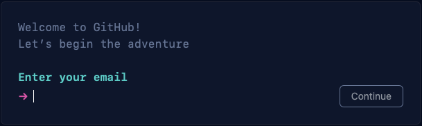

Capítulo 4 GitHub
4.1 Multiples cuentas github
Autor: Denis Berroeta Fecha: 04-02-2022
La presente página tiene como objetivo orientar respecto a como trabajar con multiples cuentas github, a raíz de la iniciativa de crear un "organización" en github, para el trabajo colaborativo pero con cuentas creadas con el correo institucional del Universidad.
El presente procedimiento esta orientado a ususarios git desde la terminal
Crear la cuenta github con correo institucional
Ir a https://github.com y presionar “Sign Up” y continuar con el proceso de logearse pero con el correo institucional.
GitHub: Where the world builds software

Crear una SSH Key
Para este paso se utiliza la referencia oficial sobre la generación de SSH Keys de la documentición oficial de Github.
Desde la Terminal escribir el siguiente comando reemplazando correo institucional:
Lo anterior crea una nueva SSh key para el correo instucional, que son dos una pública y optra privada
Posteriormente pregunta la ubicación donde se almacenará las keys, se recomienda en la carpeta oculta de .ssh (/Users/you/.ssh), si presionas enter la agrega en la ubucación actual.
Finalmente pregunta por una frase de seguraidad (también se puede presionar enter y saltarse ese paso).
> Enter passphrase (empty for no passphrase):[Type a passphrase]
> Enter same passphrase again:[Type passphrase again]Si se hicieron bien los paso anteriores se tienen que haber creado las dos credenciales, como se ve en la figura se crean por pares.

Agregar Key Pública a la cuenta
Dirigirse https://github.com logearse con la cuenta institucional, irse a "setting" (hacer click sobre tu imagen avatar, derecha abajo)

irse a “SSH and GPG keys”, y hacer click sobre el botón “New SSh key”. Se abrirá el siguiente cuadros de textos para rellenar, el primero “Title” que corresponde al nombre que tendrá la key (puede ser cualquiera, que identifique el pc donde creaste las keys de la etapa anterior).
En el cuandro de texto “Key” que corresponde al lugar donde se pegará el texto de la key publica creada en la etapa anterior (file.pub).


Agregar cuentas Github al alrchivo de configuración SSH
Se creará un archivo donde se almacenará la configuración de las cuentas creadas.
Generalemente existe un archivo llamado “config” en la ruta “~/.ssh/config” en caso que no existe se debe crear:
Para luego editar con cualquier editor de texto (ej:vim ~/.ssh/config)
Usar credenciales institucionales
Crear repositorio nuevo en github para luego clonarlo en repositorio local y se define el “remote” con el nombre de la credencial que se definión en el archivo de config de ssh. **
Cambiar usuario de un Repositorio existente
Setear el nombre y correo Institucional (link), con los siguientes comandos:
Referencias: